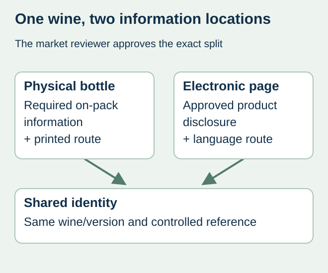
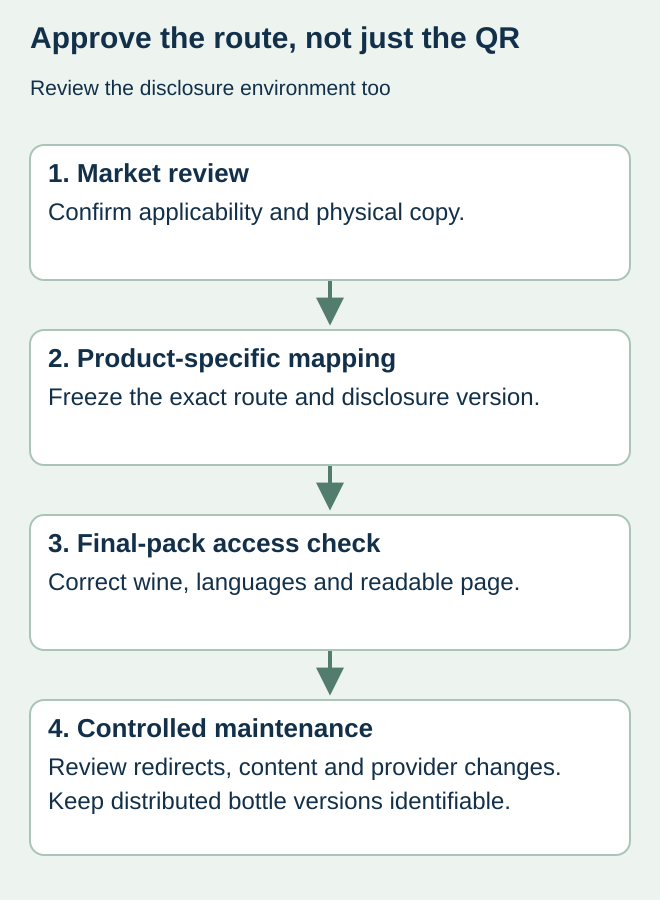

A winery adds a QR code to the back label and assumes all detailed information can move to its usual product webpage. The print file may look finished while the regulatory split between physical and electronic information remains unresolved. The page can also change independently of the bottles already in distribution.
Obtain the market reviewer’s approved physical/electronic information split, then bind the exact printed route to the correct wine and disclosure version. A working phone scan proves access at that moment; it does not establish that the disclosure or bottle copy meets the applicable EU requirements.


Confirm the applicable wine and information split
The European Commission’s wine-labeling questions and answers discusses the electronic route for ingredients and nutrition information, information that remains physically required, and limits involving marketing and user-data collection. Energy and allergen information cannot simply be omitted from the physical label by adding a QR code. Have a qualified reviewer confirm applicability, current rules and the exact approved copy for the wine concerned.
Do not reuse an older wine’s decision without checking the actual product and relevant transitional conditions. Keep the reviewer’s answer with the SKU, wine version, intended markets and production context. This article coordinates printing inputs; it does not provide a complete legal label specification.
Create a bottle-to-disclosure map
| Linked object | Record to freeze | Review question |
|---|---|---|
| Physical label | Artwork revision and approved on-bottle statements | What must remain readable on this bottle? |
| Encoded route | Exact production string and routing owner | Which disclosure does the printed code reach? |
| Electronic content | Product/version, approved information and languages | Does it describe this wine rather than another release? |
| Page behavior | Reviewer-approved disclosure environment | Are commercial content and tracking issues resolved? |
| Maintenance | Named owner and change/access procedure | Who preserves the route for distributed stock? |
Use exact strings and content references rather than a screenshot labeled “QR approved.” A short link, redirect and final destination can have different owners. Avoid putting account credentials into the public artwork record; retain the business access through its normal credential process.


Test the complete route without mistaking it for compliance
Open the code from an identified final-pack sample on relevant phones and compare the displayed wine and information against the approved record. Ask the reviewer how languages and any selection screen should work for the actual markets. Document the tested route and date. Keep physical code-quality checks distinct from the legal review of the page.
In a hypothetical two-wine launch, both bottle labels might accidentally use the first wine’s route even though the two QR graphics look different after export. Comparing the destination content with the product map detects the wrong linkage. A generic website homepage is not evidence that either specific disclosure is correct.
Control content changes after the print order
Changing a webpage does not change the characters already printed on a bottle. Before altering a disclosure or redirect, identify which distributed products depend on that route and who approves the revision. Preserve earlier approved references and resolve an unavailable or transferred service through the responsible technical owner.
The QR ownership guide covers provider handover and route control. For this regulated disclosure, add the market reviewer’s conditions rather than treating a marketing QR procedure as sufficient. If the physical/electronic split remains open, hold that release scope and request the missing decision before ordering.
Discuss the unresolved label requirement
Provide the intended market, responsible wine-compliance reviewer, product/version map, approved physical copy, exact electronic route and label dimensions. Do not send an unreviewed marketing-page QR as final disclosure artwork. Prepare a label specification inquiry. The contact page opens an email draft and lists email or WhatsApp for attachments. Supply, proof options, testing, pricing and timing require project confirmation.